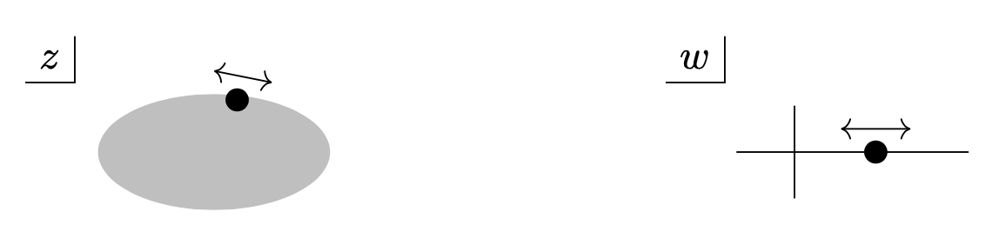
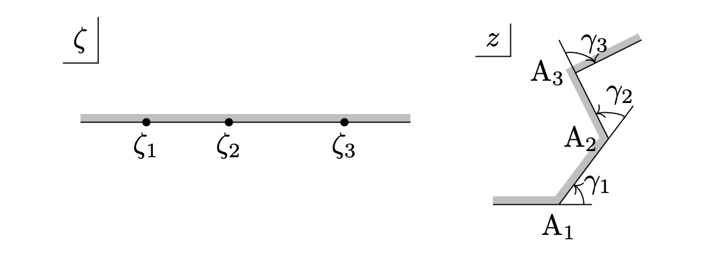
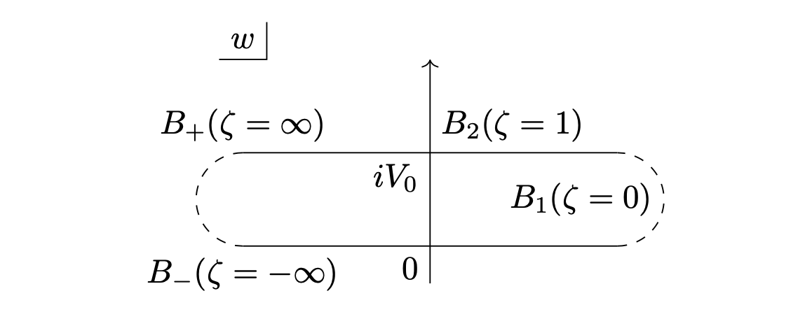

等角写像を探す方針
2つの複素平面の役割
2次元の静電場を求める際に等角写像を用いる方法があります。
等角写像 (複素正則関数) \(f:z\mapsto w\) によって
「位置 \(z\) での電位は \(\phi(z)=\Re w\) (または \(\Im w\)) である」とできれば、
あとは勾配を計算して電場を求めるだけになります。
が、境界における電位をしっかり表してくれる等角写像 \(f\) を当てずっぽうに探すのは至難の業です。
しっかり定式化できるのであればぜひプロトコル (作業手順) を作って汎用性を高くしたい。
その定式化の方針を立てていきましょう。
まず \(z\) 平面は物体の配置・形状を表すための平面です。
\(z=x+iy\) を使って電位 \(\phi(x,y)\) を求めることを考えれば、この意味を理解するのは難しくないでしょう。
従って \(z\) 平面で真っ先に考える曲線は、境界条件を与える物体 (基本的に導体) の形状に沿うものにしなければなりません。
例えば半径 \(r\) の導体球が存在するなら、\(|z-c|=r\) の曲線上で等電位であることを議論する必要があります。
他方 \(w\) 平面は電位を表すための平面です。
コーシー-リーマンの関係式の要求から \(w\) は実部か虚部かが電位を表します。
電場の決定問題で等角写像を使う理由がコーシー-リーマンの関係式にあるので、当然といえば当然です。
今回は図の描きやすさと元文献での使い方から、虚部が電位を表すように、すなわち \(\phi(z)=\Im w\) となるようにします。
導体表面上における等角写像の挙動
さて、特に導体表面上では電位が一定ですから、
\(z\) が導体表面を動くとき \(w\) の虚部は変わりません。
そして境界面上で写像 \(f:z\mapsto w\) が連続になるという妥当な要求をすれば、\(z\) が電位 \(\phi\) の導体表面を動く間 \(w\) は実軸に平行な直線 \(\Im
w=\phi\) の上を右に左にとしか動きません。

導体表面を \(z\) が動くとき、\(w\) は実軸に平行な直線上を左右にしか動かない。
では、この「\(z\) が電位 \(\phi\) の導体表面を動く」というのをどのように表現したらよいか。
いかにも高校数学で散々お世話になった軌跡の話を思い出す言葉の使い方ですよね。
軌跡を表すのに高校数学では主にどんな道具を使ったか。
そうです。
パラメーターです。
結局のところ、導体系の静電場決定問題で使う等角写像はパラメーターを使った軌跡の問題に帰着されます。
複素平面と複素平面をつなぐから一見わからなかったものの、根本の考え方は高校時代と大差ありません。
パラメーター \(t\in\mathbb{R}\) を使うことで、導体表面は複素平面上の曲線 \(z(t)=x(t)+iy(t)\) で表され、そのときの電位は \(\phi(t)=\Im w(t)\)
となります。
\(z\) と \(w\) が \(t\) の関数で表せたら、あとは「導体表面に対応する点では \(t\in\mathbb{R}\) が存在する」という条件からパラメーター \(t\)
を消去し、導体表面での電位を虚部で与える軌跡 \(w=g(z)\) が求まります。
電位 \(\phi(z)=\Im w=\Im g(z)\) は境界条件を満たし、軌跡 \(g\) が正則関数ならコーシー-リーマンの関係式から \(\Delta\Im g=0\) となります。
この \(g\) こそ冒頭で求めていた等角写像 \(f\) ですね。
シュバルツ-クリストッフェル変換
そこで登場するのがシュバルツ-クリストッフェル (Schwarz-Christoffel) 変換を用いた方法になります。
\(i\in\{1, 2, \cdots, n\}\) に対し、\(\zeta_i, \gamma_i\in\mathbb{R}\) をとる。
ただし \(\displaystyle\sum_i\gamma_i=2\pi\) とする。
このとき、微分方程式
\begin{align}
\dfrac{dz}{d\zeta}
=
k
(\zeta-\zeta_1)^{-\gamma_1/\pi}
(\zeta-\zeta_2)^{-\gamma_2/\pi}
\cdots
(\zeta-\zeta_n)^{-\gamma_n/\pi}
\qquad
(k\in\mathbb{C})
\end{align}
の解は、\(\zeta\) 平面の上半平面を、頂点の外角が \(\gamma_i\) となるような \(z\) 平面の (凸とは限らない) 多角形内部に移す変換である。
一般的な描像は図に示す通りです。

シュバルツ-クリストッフェル変換は上半平面を多角形内部に写す
証明が気になる人は Ahlfors p. 257 など複素解析の本を見てもらうとして、ここでは境界に関するイメージをつかんでおきましょう。
シュバルツ-クリストッフェル変換の境界線における挙動のイメージ
\(\zeta\) を \(-\infty\) から \(\zeta_1, \zeta_2, \cdots, \zeta_n\) を通って \(+\infty\)
まで、実軸上を右に動かします。\(\zeta\in(\zeta_i-\varepsilon, \zeta_i+\varepsilon)\) での挙動を考えます。
\(\zeta\) が \(\zeta_i\) の左から右に移るとき \(\zeta-\zeta_i\) の符号が変わりますね。
それ以外の部分は滑らかに変化します。
\(\varepsilon\) を十分小さくとれば、
\begin{array}{rcl}
\left(\dfrac{dz}{d\zeta}\right)_{\zeta=\zeta_i-\varepsilon}
&=&
(-\varepsilon)^{-\gamma_i/\pi}
k
(\zeta_i-\zeta_1)^{-\gamma_1/\pi}\cdots
\\
\left(\dfrac{dz}{d\zeta}\right)_{\zeta=\zeta_i+\varepsilon}
&=&
\varepsilon^{-\gamma_i/\pi}
k
(\zeta_i-\zeta_1)^{-\gamma_1/\pi}\cdots
\end{array}
ですから、
\begin{array}{rcl}
\left(\dfrac{dz}{d\zeta}\right)_{\zeta=\zeta_i+\varepsilon}
&=&
\left(\dfrac{dz}{d\zeta}\right)_{\zeta=\zeta_i-\varepsilon}
(-1)^{\gamma_i/\pi}
\\
&=&
\left(\dfrac{dz}{d\zeta}\right)_{\zeta=\zeta_i-\varepsilon}
e^{i\gamma_i}
\end{array}
となります。
\(dz/d\zeta\) は \(z\) 平面における向きづけられた曲線 \(z(\zeta)\) の方向ベクトルに相当しますから、\(\zeta\) が \(\zeta_i\)
を超えることで方向ベクトルの偏角が反時計回りに \(\gamma_i\) だけ回っていることがわかりますね。
これゆえに「外角 \(\gamma_i\)」とか「\(z\) 平面上の多角形」という言葉が登場するわけです。
多角形の外角の和は一般に \(2\pi\) ですから、前提条件として \(\displaystyle\sum_i\gamma_i=2\pi\) が要求されています。
静電場の境界値問題を解くプロトコル
「2つの複素平面の役割」のパートで申し上げた通り、静電場の境界値問題において等角写像で繋ぐべきは、導体系の形状を表す \(z\)
平面と、各導体の電場を虚部で表す \(w\) 平面です。
できることなら一発で \(z\mapsto w\) の変換を持っていきたいところですが、そんな天才的発想が可能な頭脳を持ち合わせていない我々はパラメーター \(\zeta\) を一度媒介して \(z\) と
\(w\) を繋がなければなりません。
ということで、\(\zeta\) 平面から \(z\) 平面へのシュバルツ-クリストッフェル変換と、\(\zeta\) 平面から \(w\)
平面へのシュバルツ-クリストッフェル変換とで、2回にわたって変換を行います。
- \(\zeta\mapsto z\) のシュバルツ-クリストッフェル変換を導出する
- 導体表面をなぞって曲線を \(z\) 平面に描く
- 直線の無限遠点での交点を頂点とみなして多角形Pを作る
- Pの外角 \(\gamma_1, \cdots, \gamma_n\) を数え上げる
- Pの頂点 \(z_1, \cdots, z_n\) に対応する \(\zeta_1, \cdots, \zeta_n\) を順に \(\zeta\) 平面実軸上にとる
- シュバルツ-クリストッフェル変換の微分方程式を積分して解く
- \(\zeta_1, \cdots, \zeta_n\) 近傍での \(\zeta\) の動きと \(z_1, \cdots, z_n\) 近傍での \(z\) の挙動から係数 \(k\)
と積分定数を決定する
- \(\zeta\mapsto w\) のシュバルツ-クリストッフェル変換を導出する
- 導体表面における電位を虚部にもつ実軸に平行な直線を \(w\) 平面に描く
- 直線の無限遠点での交点を頂点とみなして多角形Qを作る
- Qの外角 \(\delta_1, \cdots, \delta_n\) を数え上げる
- \(\zeta_1, \cdots, \zeta_n\) を順にQの頂点 \(w_1, \cdots, w_n\) に対応させる
- シュバルツ-クリストッフェル変換の微分方程式を積分して解く
- 対応する \(\zeta\) 平面と \(w\) 平面の点での値によって係数 \(k\) と積分定数を決定する
- \(\zeta\) を消去して変換 \(f:z\mapsto w\) を求める
- \(\phi(x,y)=\Im f(x,y), \boldsymbol{E}=-\nabla\Im f\)
例題
習うより慣れろということで、実際に例題を使ってシュバルツ-クリストッフェル変換の使い方を見ていきましょう。
図のように無限平面導体板と、直角に曲げられた無限導体板とが、間隔 \(b\) で平行に置かれ、それぞれの電位が \(0, V_0\) に保たれているとき、\(z\text{-}w\) 変換を求めよ。
\(z\)平面
以下の解法は詳解電磁気学演習に従います。
全く、等角写像法を知らずにこんな問題が出てきたら、手の打ちようがないですよね。
\(\zeta\to z\)のシュバルツ-クリストッフェル変換の導出
まずは導体板の形状を反映した \(z\) 平面への変換を探していきます。
はじめに、\(z\) 平面における導体表面の配置を多角形で表します。
このとき、平行な直線は「無限遠点で交わる」と捉えるのがポイントです。
多角形は上図のようになります。
きっと信じてもらえないでしょうが、三角形です。
各頂点を順に \(A_1, A_2\) としましょう。
頂点 \(A_1\) は無限遠点です。
下の直線の左側の極限の点 \(A_-\) と、上向の直線の上側の極限の点 \(A_+\) とは、無限遠点で同一な点を表し、多角形の頂点を成しているとみなすことができます。
ただし今回は「多角形が閉じている」ということを除いてその事実を使わないので考慮不要です。
続いて \(A_1, A_2\) の外角を測ります。
\(A_1\) では方向ベクトルが \(\theta=0\) の向きから \(\theta=\pi\) に変わっているので外角は \(\gamma_1=\pi\) であり、\(A_2\) では
\(\theta=\pi\) から \(\theta=\pi/2\) に変わって \(\gamma_2=-\pi/2\) です。
外角は偏角と同じく反時計回りを正に取ることをお忘れなく。
またシュバルツ-クリストッフェル変換の要件に \(\displaystyle\sum_i\gamma_i=2\pi\) というものがありますが、不足分の外角
\(2\pi-\pi-(-\pi/2)=3\pi/2\) は無限遠点 \(A_+, A_-\) でなんとかしてくれるものとします。
あとでご紹介するリーマン面を考慮すれば、この妥当性もわかるのではないかと思います。
次いで、\(A_1, A_2\) に対応する点を \(\zeta\) 平面実軸上にとっていきます。
この点の位置は順番さえ守ればどこでも構わないので、図の通り \(\zeta_1=0, \zeta_2=1\) としましょう。
\(\zeta\) 平面
これで役者は揃いました。
シュバルツ-クリストッフェル変換の式は
\begin{align}
\dfrac{dz}{d\zeta}
=
k_1
\zeta^{-1}
(\zeta-1)^{1/2}.
\end{align}
積分して
\begin{align}
z=\int dz
=
\int
k_1
\dfrac{(\zeta-1)^{1/2}}{\zeta}
d\zeta.
\end{align}
ここで、\(u=(1-\zeta)^{1/2}\) と変数変換して
\begin{array}{rcl}
z
&=&
\displaystyle\int k_1\dfrac{ui}{1-u^2}(-2udu)
\\
&=&
-ik_1
\displaystyle\int
\left(
\dfrac{2}{(1-u)(1+u)}-2
\right)
du
\\
&=&
-ik_1
\displaystyle\int
\left(
\dfrac{1}{1-u}+\dfrac{1}{1+u}-2
\right)
du
\\
&=&
-ik_1
\left(\ln\dfrac{1+u}{1-u}-2u\right)
+k_2
\end{array}
となります。
さあ、定数 \(k_1, k_2\) を決めていきましょう。
\(A_1\) に対応する \(\zeta_1=0\) は変換式の特異点になっていますから、図に示す形で経路をとって積分します。
 特異点 \(\zeta_1\) での積分経路
特異点 \(\zeta_1\) での積分経路
ここで、\(\zeta=\varepsilon e^{i\theta}\) にて
\begin{align}
dz
=
k_1
\dfrac{(\varepsilon e^{i\theta}-1)^{1/2}}{\varepsilon e^{i\theta}}
\varepsilon e^{i\theta}id\theta
\end{align}
であり、\(\theta\) は \(\pi\) から \(0\) に、\(z\) は \(+\infty\) から \(+\infty+ib\) に遷移するので、
\begin{array}{rcl}
\displaystyle\int_\infty^{\infty+ib}dz
&=&
\displaystyle\int_\pi^0
k_1(\varepsilon e^{i\theta}-1)^{1/2}id\theta
\\
ib&=&k_1\pi
\\
\therefore\qquad k_1&=&\dfrac{ib}{\pi}.
\end{array}
一方、\(A_2\) は正則点なので特別の配慮は不要です。
\(A_2\) では \(u=0\) なので、\(u\) と \(z\) の値を \(z\) の表式に代入して、
\begin{align}
k_2=ib.
\end{align}
以上によって \(\zeta\mapsto z\) のシュバルツ-クリストッフェル変換
\begin{align}
z
=
\dfrac{b}{\pi}
\left(
\ln\dfrac{1+u}{1-u}-2u
\right)
+ib
\end{align}
が得られますね。
\(\zeta\mapsto w\) のシュバルツ-クリストッフェル変換の導出
今度は \(\zeta\) 平面から虚軸が電位を表す \(w\) 平面へのシュバルツ-クリストッフェル変換を導いていきます。
平面の内部での多角形の取り方が異なる以外は上と全く同じ方針になります。
まずは図に示すように、境界値における電位を虚部にもち、実軸に平行な直線を描いておきます。

\(w\) 平面
\(A_1\) では \(\phi=0\to V_0\) と変化しているので、\(\zeta_1\) に対応する \(w\) 平面での頂点 \(B_1\) は \(\infty\) と
\(\infty+iV_0\) に対応する無限遠点です。
一方 \(A_2\) では電位変化がありませんから、\(w\) 平面上側の直線のどこかしらに \(\zeta_2\) と対応する点 \(B_2\) が置かれます。
実部はどこでもいいので手っ取り早く \(w_2=iV_0\) としておきましょう。
このとき多角形各頂点の外角は \(\delta_1=\pi, \delta_2=0\) となるので、シュバルツ-クリストッフェル変換式によって
\begin{array}{}
\dfrac{dw}{d\zeta}=k_1\zeta^{-1}
\\
\therefore\quad w=k_1\ln\zeta+k_2
\end{array}
が直ちに得られますね。
ここで \(\zeta\) の2点と \(w\) の2点の対応から定数 \(k_1, k_2\) を決定するわけですが、今回は代表点にわざわざ特異点を選ぶ必要はありません。
特異点となっている \(\zeta=\zeta_1=0\) 以前では、\(z\) 平面でいうところの実軸の直線上にあり、電位は常に \(0\) です。
ということは、\(\zeta=-1\) に相当する点も \(z\) 平面上どこかしらにあって電位は \(0\) ですね。
現時点では \(w\) の式をちゃんと決めていないので、\(w\) 平面の \(\zeta\lt0\) の部分と \(z\) 平面の実軸との関係性は独立しています。
\(w\) 平面の実軸上どこをとっても構いません。
それなら、\(\zeta=-1\) に対応する点が \(w\) 平面の原点にあるとしてもバチは当たらないでしょう。
これでいちいち無限小の積分路をとって特異点を迂回せずに済みました。
\(w\) の表式に \(\zeta=-1, w=0\) を代入して
\begin{align}
0=i\pi k_1+k_2.
\end{align}
一方 \(B_2\) での挙動を \(w\) の表式に代入すれば、
\begin{array}{}
iV_0=k_1\ln1+k_2
\\
\therefore\quad k_2=iV_0
\end{array}
となるので、
\begin{align}
k_1=-\dfrac{V_0}{\pi}
\end{align}
が得られます。
以上によって
\begin{align}
w=-\dfrac{V_0}{\pi}\ln\zeta+iV_0
\end{align}
ですね。
パラメーター \(\zeta\) の消去
ここまでで、\(\zeta\mapsto z\) の変換と \(\zeta\mapsto w\) の変換、及び変数変換の関係式 \(\zeta\mapsto u\) が得られています。
これと導体表面上で \(\exists\zeta\in\mathbb{R},\) それ以外の多角形内部の点で \(\exists\zeta\in\mathbb{C}\) となる条件から \(\zeta\)
を消去していきます。
なお導体表面上で実数となるように \(z\) と \(w\) を構成してきましたから、考えなければならないのは \(\zeta\in\mathbb{C}\) の存在条件だけです。
つまり安直に \(\zeta\) を代入、消去すればいい。
まず \(w\) の形式より直ちに
\begin{align}
\zeta
=
\exp\left(
i\pi-\dfrac{w\pi}{V_0}
\right)
=
-e^{-(\pi/V_0)w}
\end{align}
が成り立ち、\(u\) への変換式に入れると
\begin{align}
u=\sqrt{1+e^{-(\pi/V_0)w}}.
\end{align}
これを \(z\) の表式に入れて
\begin{align}
z
=
\dfrac{b}{\pi}
\left(
\dfrac{1+\sqrt{1+e^{-(\pi/V_0)w}}}{1-\sqrt{1+e^{-(\pi/V_0)w}}}
-2\sqrt{1+e^{-(\pi/V_0)w}}
\right)
+ib
\end{align}
となります。
原理的にはこれを \(w=\cdots\) の形に直して虚部をとれば平面内の電位が得られ、さらに勾配をとって電場が決定します。
補足：複素平面の無限遠点
平行直線が交わる必要性
本記事では「無限遠点」というものを使って半ば強引に複素平面上で多角形を構成してきました。
本来平行な2直線は平面上で決して交わることがありません。
「いや、何を今さら」と思われるでしょうが、それでは困るんですよ。
シュバルツ-クリストッフェル変換はあくまで「上半平面を多角形内部に移す」という主張のもとに成り立ちます。
平行な直線に対してシュバルツ-クリストッフェル変換を使うためには、どうしてもこの交わらない2直線が交わる必要があります。
気がふれたと思いました？
妄言と取られかねないのは承知しています。
承知の上で、議論の定式化のためには止むを得ない妄言です。
リーマン球面
では平行な2直線はどこで交わるのか。
それを定式化するために、慣れていない人からすれば少し変なことをします。
リーマン球面
図に示すような複素平面の原点を中心とする3次元球体を考えましょう。
もちろん実軸と虚軸の他にもう1本座標軸が必要です。
話をわかりやすくするために半径を1とします。
このとき球面の"北極"に相当する点 \((0,0,1)\) を通る直線 \(l\) を考えます。
基本的に \(l\) は球面の他の点Pおよび複素平面の点 \(z\) と交差しますね。
このPと \(z\) の対応関係は、北極を除いたリーマン球面 \(S^2-\{(0,0,1)\}\) と \(\mathbb{C}\) の間の全単射、さらに言うなれば同相写像で与えられます。
具体系が与えられなくても、写像と逆写像の連続性を考慮すれば同相であることが容易に想像できます。
無限遠点
この対応関係は球面上ほぼ全ての点で成り立つわけですが、唯一の例外は球面と \(l\) の第二の交点も北極となる場合です。
このときの \(l=l_0\) は複素平面と平行になって交点を持ちません。
しかし \(l_0\) は (偏角を適切に調節した上で) Pを北極に近づける極限操作で得られるものです。
Pが北極に近づけば \(|z|\) は際限なく増大します。
つまり \(l_0\) と複素平面の"交点" \(z_0\) は (当然そんなものは複素平面上にありませんが)、\(|z|\to\infty\) の結果として得られるものと考えるのが自然になるわけです。
ここで、\(l_0\) には \(z\) 軸を中心軸とする回転の自由度がありますが、北極以外でPと \(z\) が1対1に対応していたことを思い起こすと、北極に対応する点は \(z_0\)
ただ一つであってほしいと思うのが人情というもの。
ということで、この点 \(z_0\) を"無限遠点" \(\infty\) としてしまおう、と考えるわけです。
このように無限遠点を実装した複素平面を \(\mathbb{C}_\infty:=\mathbb{C}\cup\{\infty\}\) などと表し、安直に"拡張複素平面"なんて読んだりします。
先ほど取り上げたように、
シュバルツ-クリストッフェル変換を使った等角写像法では無限遠点を考えるのが必要条件となっているようなものですから、本記事で散々言っていた「複素平面」というのは拡張複素平面のことを指していたわけですね。
平行直線の交点
さて、平行な直線の交点の話に戻ります。
\(\varepsilon\text{-}\delta\) 論法を使えば、複素平面上で直線をなす点の集合には絶対値の上限がないことがわかります。
それなら直線は無限遠点を通ると考えてもいいじゃない。
これによって拡張複素平面で平行直線は交点を持つので、適切に多角形を構成することができます。
シュバルツ-クリストッフェル変換の証明に一工夫が必要ですが、それさえクリアすれば静電場の境界値問題を解くプロトコルのパートで示した方針が適用できますね。